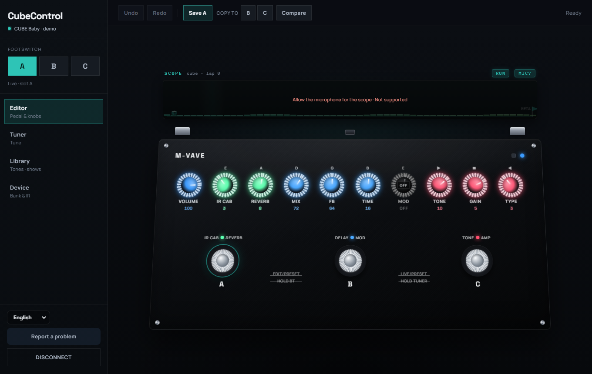
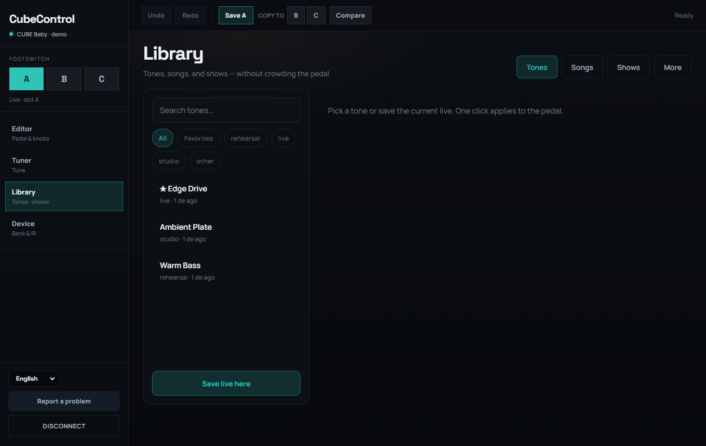
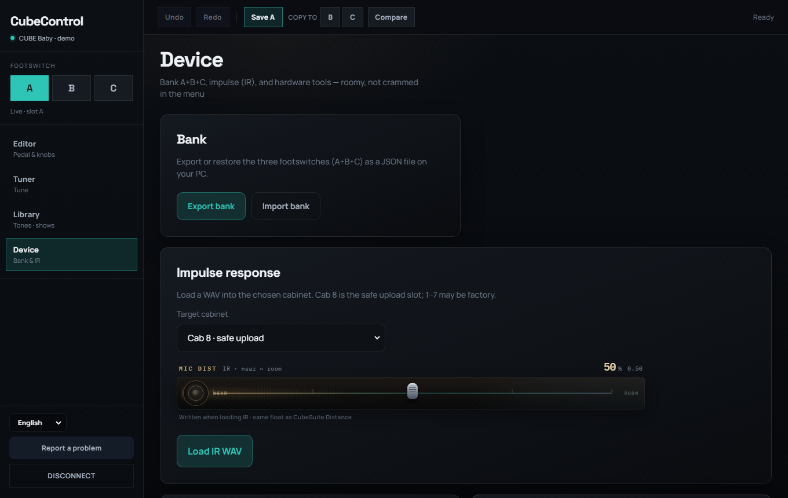

CubeControl
Open control for the CUBE Baby.
Unofficial desktop editor with real setlists, live A/B/C editing, and Cab 8 IR tools — built on an open MIDI core.

Shows that survive the gig
Build presets, songs, and ordered setlists in the library — then take them to Stage without digging through bank slots.

IR distance & Cab 8
Device tools for bank export/import and MIC DIST on Cabinet 8 — the safer slot for custom IRs.

Experimental. Prefer Cab 8.
CubeControl is not affiliated with M-VAVE or Cuvave. USB writes can brick factory IRs outside Cab 8 — export your bank first, and treat every write as experimental.
Read SAFETY.mdOpen where it matters
App and hardware protocol are MIT. Report bugs from the app or open an issue — we want real USB capture notes.